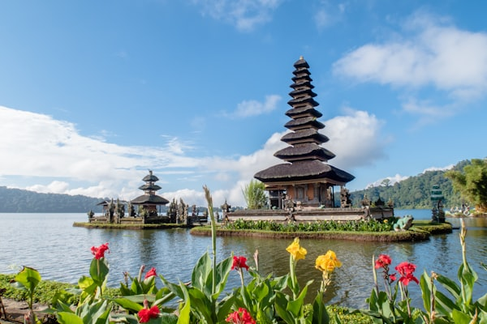
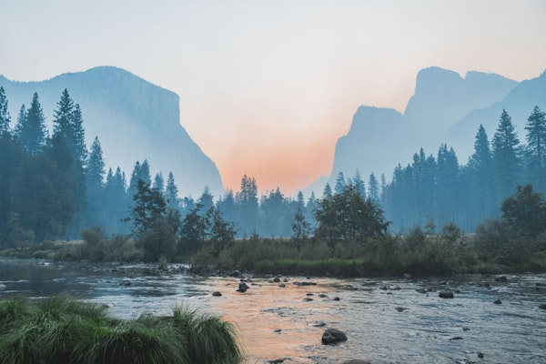

Vietnam is a land of astonishing natural diversity and cultural richness, stretching from the misty mountain peaks of the north to the sun-drenched tropical islands of the south. This interactive gallery showcases nine iconic destinations celebrated for their breathtaking topography, ancient traditions, and protected ecosystems.
This website is built with a responsive, mobile-first design architecture that gracefully adapts across mobile devices, tablets, and large screens. Furthermore, it respects individual user accessibility preferences by seamlessly handling reduced motion requests and dark mode color scheme configurations.




